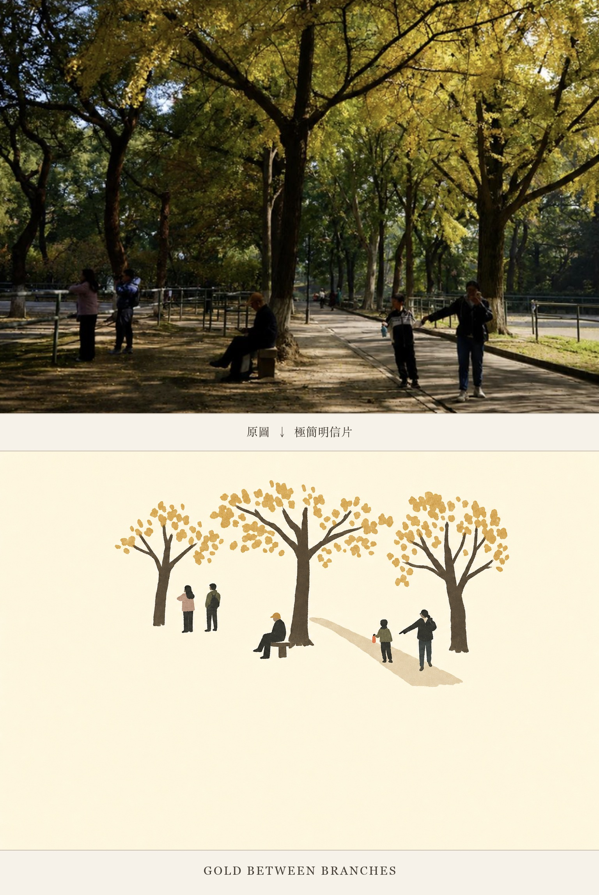

Threads｜Yu：editorial-vision-studio，把旅行照片轉成極簡明信片式編輯插畫

一句話摘要
這則 Threads 推薦 GitHub 專案 editorial-vision-studio：丟進旅行照片、街景或建築照後，AI 會將照片重新轉譯成極簡、留白多、像展覽圖錄或明信片般的編輯插畫；核心價值是把「照片轉圖」提升成「視覺導演工作流」。
為什麼保存
這很適合放入 AI 學習雷達，因為它不是單一圖像風格 prompt，而是一個可重複使用的 AI skill / workflow。它可以用於旅遊照片再創作、課程教材封面、活動主視覺、城市導覽明信片、社群貼文、展覽圖錄風圖片與品牌內容設計。
原文重點
- 最適合做明信片的 skill：把旅行照片、街景或建築照重新轉譯成極簡編輯插畫。
- 風格特徵：大量留白、極簡、低飽和、像展覽圖錄。
- GitHub：https://github.com/Yu-0312/editorial-vision-studio
- 調用方式：安裝 editorial-vision-studio 後，使用 `$editorial-vision-studio` 幫忙製作圖片。
GitHub 專案定位
editorial-vision-studio 自述是一套給 AI 圖像生成、視覺規劃與模型提示詞撰寫使用的「編輯視覺導演引擎」。它不只是寫提示詞，而是：
- 先判斷用途：展覽輸出、海報、活動主視覺、產品編輯圖、網站首圖、小誌或情緒看板。
- 拆解視覺語言：例如博物館感、建築感、產品靜物感、安靜人物感、都市紀實感。
- 選版面與風格：如 ivory-postcard、vintage-travel-poster、papercraft-diorama-postcard 等 preset。
- 輸出模型提示詞：可轉成 GPT Image、Flux、Ideogram 或通用模型能執行的 prompt。
- 產圖前做衝突檢查：避免風格、底色、字體、材質、版面互相打架。
- 產圖後評分與修正：只修分數最低的那一層，最多修三輪。
- 需要系列圖時鎖定視覺系統，讓多張圖像像同一本刊物。
圖片示例觀察
附圖展示「原圖 → 極簡明信片」的轉換：上半部是公園銀杏樹下的人群照片；下半部將樹木、人物與道路簡化為象牙白底、低飽和色塊與扁平水粉筆觸，保留空間關係與安靜節奏，並加上英文標題 “GOLD BETWEEN BRANCHES”。
對欒帥的應用價值
- 可以做成旅遊照片轉「城市明信片」的教學範例。
- 可延伸到 AI 學習雷達的素材視覺化：把文章、地點、課程或活動轉成統一風格圖卡。
- 可作為 Hermes / Codex skill 設計案例：不是只產 prompt，而是把用途判斷、風格選擇、模型轉接、評分修正都封裝起來。
- 若搭配欒帥偏好的高質感設計，可發展成「AI 旅行圖錄」「課程海報」「知識卡主視覺」模板。
可直接使用的提示詞方向
請使用 editorial-vision-studio，將我上傳的照片只作為內容參考，不要保留寫實攝影細節、光線、透視或材質。挑選三到五個最具辨識度的元素，重新構圖成象牙白紙底、大量留白、低飽和色盤與扁平水粉筆觸的極簡明信片。不要雜誌封面、外框、條碼、額外文字或浮水印，請直接生成圖片。
後續追蹤
- 測試它在不同素材上的穩定性：旅行照、建築照、人物照、食物照、課堂照片。
- 比較 GPT Image、Flux、Ideogram 轉接器輸出的差異。
- 若要用於公開知識庫，需注意原始照片授權、生成圖標示與作者來源。
- 可評估是否將其整理成 Hermes skill 或課堂工作坊範例。
原始連結
https://www.threads.com/@yuqi._.0313/post/DbvC4UrozjN